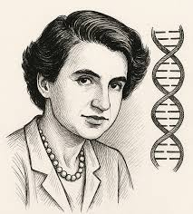
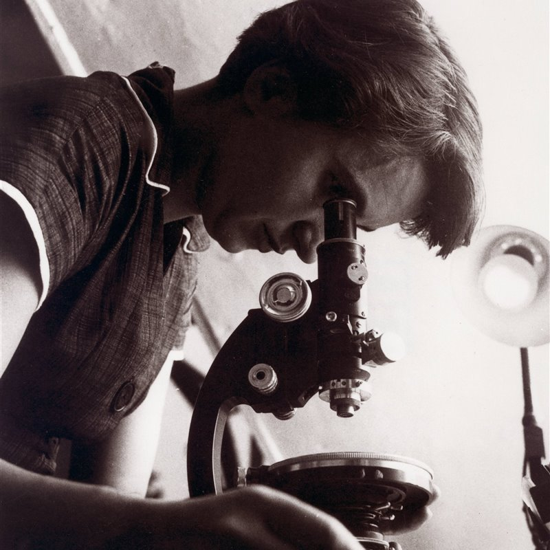
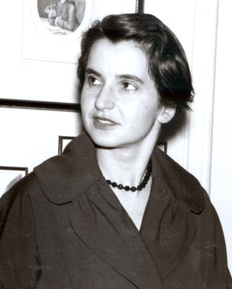

Nació el 25 de julio de 1920 en Londres. Desde joven destacó en ciencias. Se especializó en cristalografía de rayos X. En el laboratorio King’s College obtuvo la Fotografía 51, una imagen decisiva que permitió descubrir la estructura de doble hélice del ADN. Aunque su trabajo fue utilizado sin su permiso por Watson y Crick, su aporte fue fundamental para la genética moderna. Investigó también virus, carbón y materiales avanzados. Su carrera estuvo marcada por la discriminación de género. Murió el 16 de abril de 1958 por cáncer de ovario, probablemente relacionado con su trabajo con radiación. Tras su muerte, su contribución comenzó a ser valorada mundialmente. Hoy es considerada una de las científicas más importantes del siglo XX. Su historia es símbolo de justicia científica. Su legado cambió la medicina, la biología y la investigación genética para siempre.